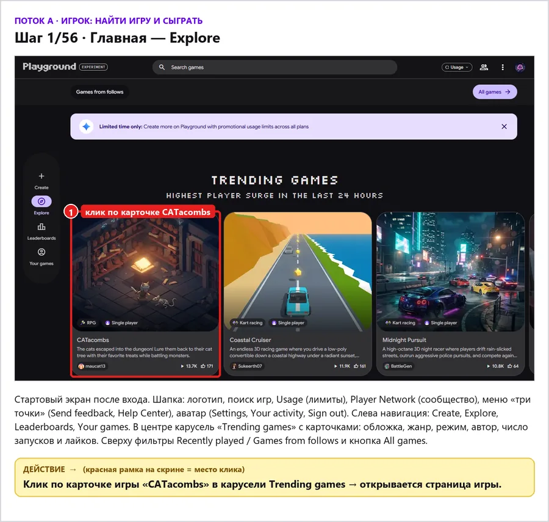

Шаг 1 / 26
Главная — Explore
Стартовый экран после входа. Шапка: логотип, поиск игр, Usage (лимиты), Player Network (сообщество), меню «три точки» (Send feedback, Help Center), аватар (Settings, Your activity, Sign out). Слева навигация: Create, Explore, Leaderboards, Your games. В центре карусель «Trending games» с карточками: обложка, жанр, режим, автор, число запусков и лайков. Сверху фильтры Recently played / Games from follows и кнопка All games.
Действие
Клик по карточке игры «CATacombs» в карусели Trending games → открывается страница игры.
- 1клик по карточке CATacombs